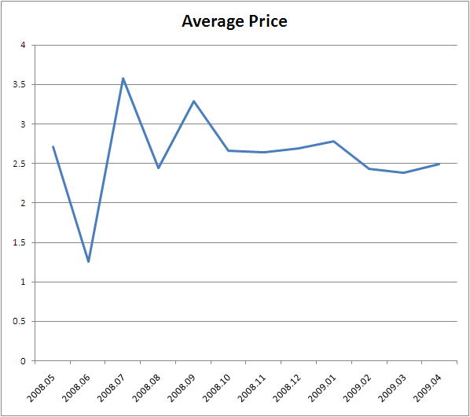

One of the frustrations that I’ve had with the data from the App Store is the difficulty in comparing the various categories of application on the store. The popularity score appears to be related to the category, so you can’t effectively compare applications across categories. This makes it tough to do things like rank categories.
As I was playing around with the data, however, I thought I’d try to rank the categories by creating a score for the category based upon the simply sum of the popularity of the top 25 most popular applications in each category. My theory is simply that even though you can’t compare across categories, you can see what categories are popular based upon the total (or average) of the most popular applications. The results aren’t that surprising— games and entertainment are overwhelmingly more popular than other categories.
But way to go Finance- cracking the top 5!
| Genre | Top 25 Popularity |
|---|---|
| Games | 12.57416165 |
| Entertainment | 10.00990161 |
| Utilities | 5.601598622 |
| Finance | 4.76452379 |
| Photography | 3.976679545 |
| Music | 3.936911809 |
| Social Networking | 3.791524468 |
| Health and Fitness | 3.761630667 |
| Lifestyle | 3.74729853 |
| News | 3.500520549 |
| Sports | 3.416063511 |
| Medical | 3.376850336 |
| Reference | 2.890492635 |
| Productivity | 2.622859642 |
| Travel | 2.526778971 |
| Books | 1.548586185 |
| Weather | 1.472607508 |
| Business | 1.275677389 |
| Navigation | 1.223784489 |
| Education | 0.779896454 |
Category Concentration
One other category related question that I’ve spent some time thinking about is the concentration of applications in a category- specifically whether some categories are dominated by highly popular applications while others have a larger number of moderately popular applications. To get a sense for this- I used the above ‘Top 25 Popularity’ score and calculated what percentage of a category’s total popularity is accounted for by the top applications. Here are the results:
| Genre | Concentration |
|---|---|
| Weather | 96% |
| News | 90% |
| Reference | 85% |
| Travel | 84% |
| Social Networking | 83% |
| Sports | 78% |
| Health and Fitness | 75% |
| Finance | 75% |
| Medical | 73% |
| Navigation | 72% |
| Music | 70% |
| Photography | 69% |
| Lifestyle | 65% |
| Books | 64% |
| Productivity | 62% |
| Business | 61% |
| Utilities | 58% |
| Education | 51% |
| Entertainment | 50% |
| Games | 34% |
Games and Entertainment are the least concentrated, interestingly- the massive numbers of applications in the category create fragmentation of the popularity. Finance, which as you recall was a top 5 category, is also pretty concentrated- whoever is winning in that category is really winning.
Pricing
Taking a quick look at the latest App Store data, it looks like pricing has actually stabilized in the ballpark of $2.50.

You can download the CSV and do some analysis for yourself.
In other news, I’m going to appear on a panel for MITX tomorrow. I think registration has closed by now, so you’ll just have to wait with bated breath to hear what deep thoughts are covered…